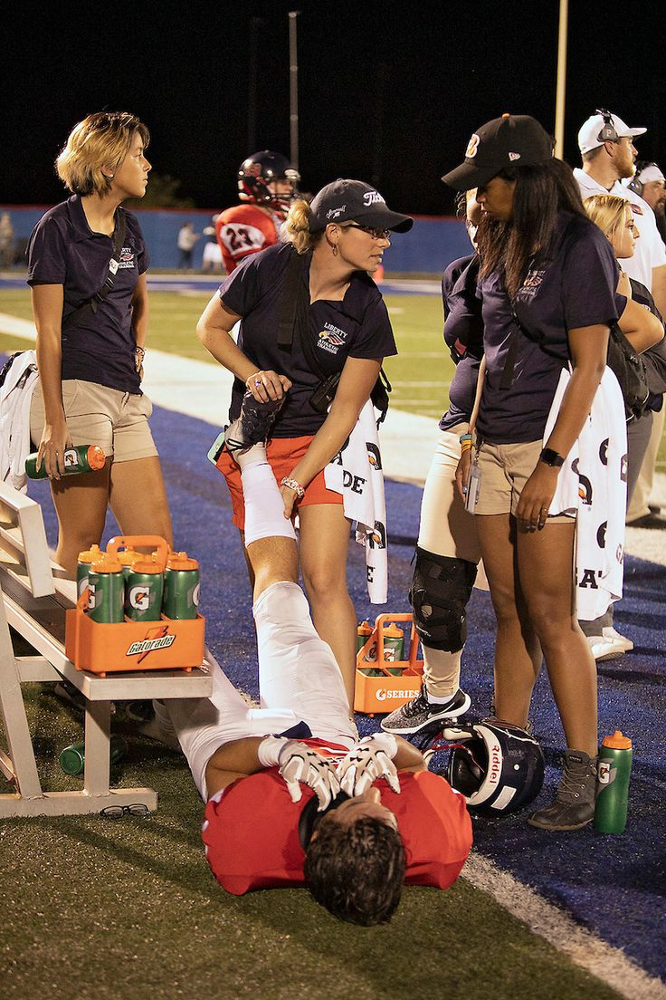

О центре
8 лет помогаем людям жить лучше
Центр «ВИТАЛЬ» основан в 2017 году командой врачей и тренеров с общей миссией — сделать оздоровительные практики доступными и эффективными для каждого.
Мы объединили под одной крышей лечебную физкультуру, современный фитнес и профессиональную реабилитацию. Наши специалисты регулярно проходят международную переподготовку и применяют доказательные методики.
Центр расположен в Минске по адресу пр-т Победителей, 67. Общая площадь составляет более 2000 м². В центре работают кабинеты врачей, залы ЛФК, бассейн, тренажёрный зал, кабинеты массажа и физиотерапии, а также просторные залы для групповых занятий.
Наша целевая аудитория — жители Минска и Беларуси, заинтересованные в лечебной физкультуре, реабилитации, спортивной медицине, оздоровительных процедурах и занятиях спортом.

Почему выбирают «Виталь»
Комплексный подход
Врачи, реабилитологи и тренеры работают в команде для достижения лучшего результата.
Доказательная медицина
Применяем только методики с подтверждённой эффективностью.
Комфортные условия
Современное оборудование, уютные кабинеты и внимательный персонал.